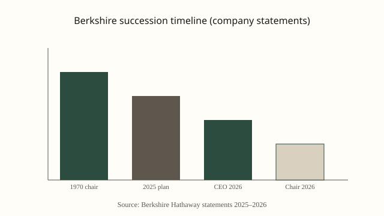

Omaha · corporate governance · 18 September 2026
Warren Buffett steps down as Berkshire Hathaway chairman; Howard Buffett succeeds him.

What is agreed across desks
On Friday, 18 September 2026, Berkshire Hathaway Inc. issued a statement that Warren E. Buffett, age 96, would step down as chairman of the board effective immediately and would become chairman emeritus. He remains a member of the board of directors. The company named his son, Howard G. Buffett, who has served as a director since 1993, as the new chairman. Greg Abel has held the chief executive officer position since the beginning of 2026, after Buffett relinquished that role at the end of 2025.
Reuters, The New York Times, CNN, and other wires quote the same core facts from the company statement and from Buffett’s letter to shareholders. The letter contains the sentence “Father Time always wins,” and notes that the succession process has been years in preparation. No change in the day-to-day management of Berkshire’s operating subsidiaries is asserted in the announcement.
Berkshire Hathaway’s market capitalization has been reported in the range of approximately $1.0–1.1 trillion in recent coverage. The company’s principal wholly owned businesses include GEICO, BNSF Railway, Berkshire Hathaway Energy, and a large portfolio of equity securities. Those holdings and the legal structure of the holding company are unchanged by the chairmanship transition.
What is only a quote or company framing
Buffett’s letter expresses confidence in Abel’s leadership and describes Howard Buffett’s role as guardian of culture and values. Those characterizations are the company’s and the founder’s; they are not independently verified metrics. Abel’s statement praising Buffett’s impact is likewise attributed corporate language. Analysts quoted in secondary coverage have described the move as the completion of a planned succession rather than a sudden event; that assessment is interpretive.
Share-price reaction on the announcement day was described by multiple outlets as muted or little-changed. That observation is based on market data available at the time of reporting and does not constitute a forecast of future performance.
Mechanism and recent history a reader needs
Buffett has been associated with Berkshire since 1965 and has served as chairman since 1970. In May 2025 he publicly outlined a succession plan that contemplated Abel as CEO and a continuing family presence on the board. Abel assumed the CEO title at the start of 2026. The 18 September action separates the chairmanship from the CEO role and places a long-serving director who is also the founder’s son in the board leadership position while retaining Buffett as an emeritus director.
Under Delaware corporate law (Berkshire is a Delaware corporation), the board elects its own officers; the announcement reflects a board decision. Chairman emeritus is an honorary or advisory title that does not by itself confer residual legal authority beyond what the board continues to grant. The company’s bylaws and any board resolutions implementing the change are the controlling documents; the public letter is explanatory, not the operative instrument.
The transition occurs against a background of elevated interest rates (the Federal Reserve raised the federal funds target range on 16 September) and ongoing public discussion of large-capitalization equity valuations. Those macroeconomic facts are separate from the governance change itself.
What the story is not
The announcement is not a sale of the company, a breakup of the conglomerate, or a change in the identity of the CEO. It is not an admission of incapacity; the letter frames the decision as the logical next step after Abel’s performance in the CEO role. It does not alter the voting power of Class A or Class B shares or the existing capital-allocation framework that Buffett and Abel have described in prior annual letters.
Secondary commentary that treats the event as the symbolic end of an era is opinion. The checkable record is the company statement, the effective date, the identity of the new chairman, and the continued board membership of the founder.

Source articles and scores
Images: Wikimedia Commons type portrait (Warren Buffett in 2010, White House / PD-USGov) via Special:FilePath. Caption states it is not a contemporaneous event photograph. Chart is an original local SVG. onerror falls back to committed SVGs in images/. No crossorigin attribute.